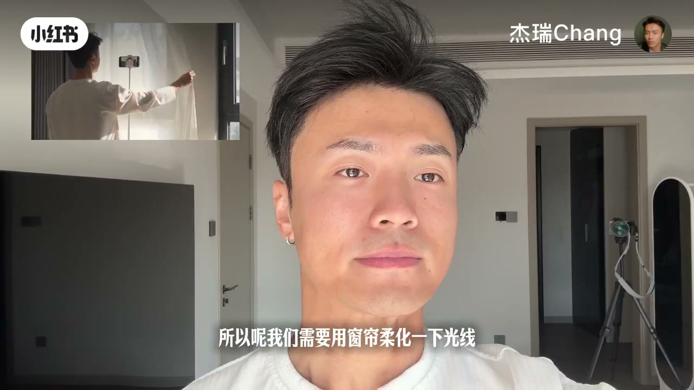
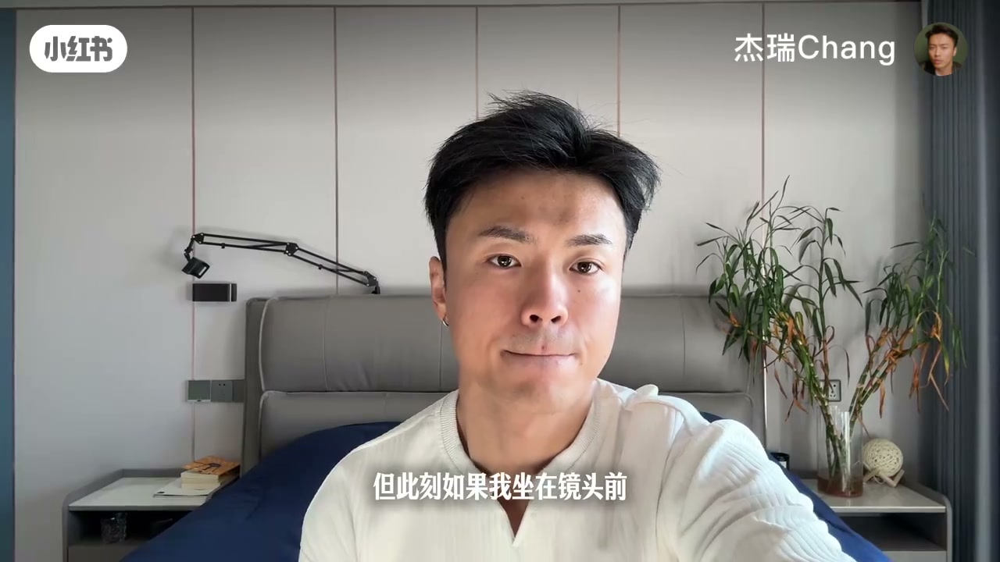
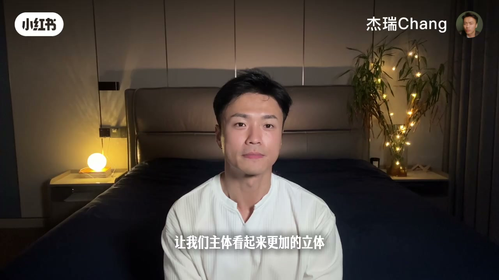

内容要点
一支 2 分钟的手机拍摄灯光教学：博主把普通房间一步步改造成专业工作室，从零成本方案（关顶灯、开窗户、窗帘柔光）到 68 元反光板、500 元面光灯、1000 元口袋灯，四档预算讲清楚如何用手机拍出专业视频。
知识结构
[00:00→00:33]
零成本方案
关掉顶灯避免熊猫眼，打开窗户利用窗光，用窗帘柔化直射光。
[00:33→01:10]
背景与 68 元反光板
找对称构图、收拾背景留性格小物；脸阴影重时用 68 元反光板补光。
[01:10→01:37]
500 元面光灯方案
买面光灯、拉窗帘隔绝杂光，加氛围灯让背景自然，面光放斜上方。
[01:37→02:00]
1000 元口袋灯方案
加两个口袋灯：正后方打立体、正上方打发丝与轮廓分离背景。
总结
手机拍视频灯光四档：¥0 关顶灯+窗户+窗帘柔光；¥68 加反光板补阴影侧；¥500 面光灯+氛围灯拉窗帘；¥1000 加两个口袋灯打轮廓和发丝光，分层叠加出专业效果。
零成本：关顶灯开窗户
第一步关掉顶灯，因为顶灯会制造熊猫眼和难看阴影；同时打开窗户利用免费光源，但不能用直射光，需要用窗帘柔化光线，遮蔽脸上瑕疵。
背景收拾与 68 元反光板
找一个相对好看的背景，比如对称构图，再顺手收拾一下留些有性格的小东西，像书、植物等。如果脸上阴影重，花 68 元买反光板放在阴影侧，不断调试找到适合自己的角度。

500 元面光灯方案
预算调到 500 元档位：买一个面光灯，拉上窗帘隔绝一切不必要光线，用氛围灯让背景自然。面光放斜上方，阴影侧根据需求加反光板，效果不错。

1000 元口袋灯方案
预算 1000 元：在之前基础上再买两个口袋灯，一个放正后方让主体立体，一个放正上方让发丝与背部轮廓和背景分离，大功告成。
